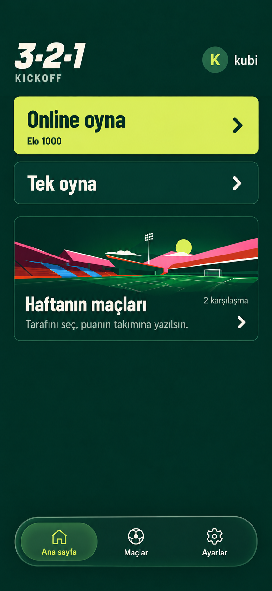
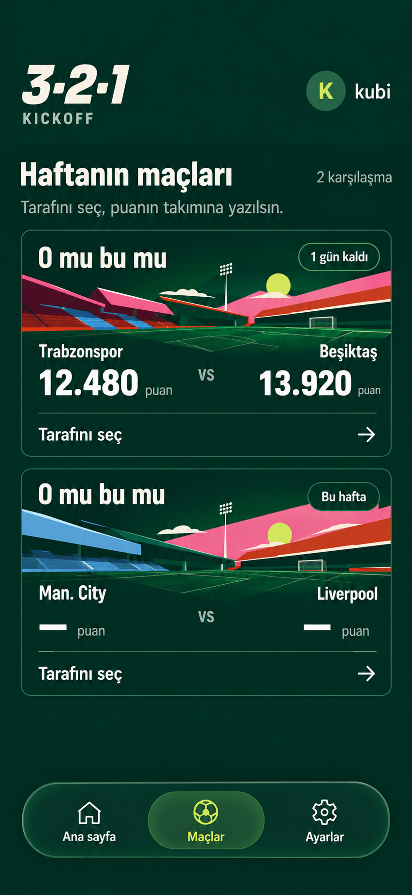
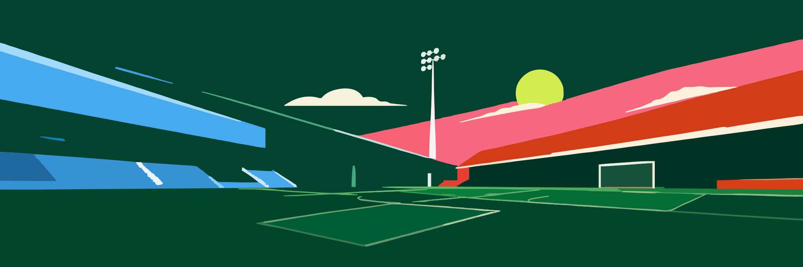

Sportif display
Online oyna
Haftanın maçları
12.480 puan
Barlow Condensed · 600 / 700 / 800

DEVELOPER HANDOFF / V1
İki seçili ekran, ortak tasarım sistemi ve önerilen UI durumları.
Görsel hedefler aynen korunmuştur. Aşağıdaki ek bileşenler bu sisteme önerilen genişletmelerdir.


Online oyna
Haftanın maçları
12.480 puan
Barlow Condensed · 600 / 700 / 800
Tarafını seç, puanın takımına yazılsın.
Ğğ Üü Şş Iı İi Öö Çç
Inter · 400 / 600 / 700
16/24 gövde · 14/20 etiket · 12/16 nav
20 gutter · 4 / 8 / 12 / 16 / 24 spacing
10 aksiyon · 12 kart · 24 sheet · tam kapsül menü
100ms basılma · 180ms seçim · 240ms sheet. Reduce motion destekli.
24 ikon · 48 hedef · nav 72 yüksekliği + safe area.
Tam kart yönlendirme; takım seçimini doğrudan açmaz.
12.480puan
13.920puan
CTA → sheet → seçim → onay → footer. Örnek seçim bellekte tutulur.

—puan
—puan
Bu alan boş bırakılamaz.
Öneri: ceza süresi bitince input tekrar açılır.
Oyun içi sesler
Ses efektleri açık.
Ayarlar kullanıcı tarafından menü hedefi olarak seçildi. Bu sayfa görünümü öneridir; tek mevcut ses tercihiyle sınırlıdır.
Segmented choice: genel primitive örneği.
3 saniye başlangıç · 15 saniye round · yanlış cevapta 5 saniye kilit · ilk 3 puan. Bu primitive’ler tam oyun ekranı değildir.
Deadline otoriter oyun state’inden gelir; bu sayaç yerel demodur.
Puanın eklendi.
5 saniye sonra tekrar deneyebilirsin.
Kazandın!
3 – 1
Örnek oyun sonucu; Elo değişimi gösterilmez.
Bağlantını kontrol edip tekrar dene.
Durum metin ve ikonla anlatılır.
Yeni karşılaşmalar burada görünecek.
Yüklenme ve boş sonuç ayrı state’lerdir.
Escape / kapat: iptal. Seçim onayı: footer güncellenir. Modal focus açan elemana döner.
Backend, persistence ve native klavye yok. UI durumları incelenebilir.
Stadyumlar renkli path exportları; logo seçili raster işaretten doğrudan trace. Raster/vektör karşılaştırması dokunun sadeleşmesini gösterir.